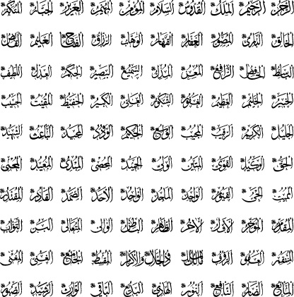

O Allah ki O’ndan başka ilâh yoktur. O, er-Rahmân, er-Rahîm, el-Melik, el-Kuddûs,
es-Selâm, el-Mü’min, el-Müheymin, el-Azîz, el-Cebbâr, el-Mütekebbir, el-Hâlık, el-
Bâri’, el-Musavvir, el-Ğaffâr, el-Kahhâr, el-Vehhâb, er-Razzâk, el-Fettâh, el-Alîm, el-
Kâbıd, el-Bâsit, el-Hâfid, er-Râfi‘, el-Mu‘izz, el-Müzill, es-Semî‘, el-Basîr, el-Hakem,
el-Adl, el-Latîf, el-Habîr, el-Halîm, el-Azîm, el-Ğafûr, eş-Şekûr, el-Aliyy, el-Kebîr, el-
Hâfiz, el-Mukît, el-Hasîb, el-Celîl, el-Kerîm, er-Rakîb, el-Mücîb, el-Vâsi‘, el-Hakîm,
el-Vedûd, el-Mecîd, el-Bâ‘is, eş-Şehîd, el-Hakk, el-Vekîl, el-Kaviyy, el-Metîn, el-
Veliyy, el-Hamîd, el-Muhsî, el-Mübdi’, el-Muîd, el-Muhyî, el-Mümît, el-Hayy, el-
Kayyum, el-Vâcid, el-Vâhid, es-Samed, el-Kadir, el-Muktedir, el-Mukaddim, el-
Müehhir, el-Evvel, el-Âhir, ez-Zâhir, el-Bâtın, el-Valî, el-Müteâlî, el-Berr, et-Tevvâb,
el-Müntakim, el-Afüvv, er-Raûf, Mâlikü’l-mülk, Zü’l-celâli ve’l-ikram, el-Muksit, el-
Câmi’, el-Ğaniyy, el-Muğnî, el-Mânî’, ed-Dârr, en-Nâfi‘, en-Nûr, el-Hâdî, el-Bedî‘, el-
Bâkî, el-Vâris, er-Raşîd, es-Sabûr’dur.”[119]
Eski dönemlerde yaşayan meşâyih, (esmâ-i hüsnâyı okurken) ilk olarak “Allah’ım, ey
Rahmân, ey Rahîm...” diye başlamayı, esmâ-i hüsnânın hepsinin başında “ey” demeyi;
hepsinin sonunda ise “Muhammed (a.s.)’a ve âilesine salât etmeni, nimetini
tamamlayarak ve afiyette dâim kılarak beni ve benimle alâkası olan herkesi
rızıklandırmanı senden isterim, ey merhametlilerin en merhametlisi.” demeyi güzel
görmüşlerdir. (el-Esrârü’l-Muhammediyye’de böyle geçmektedir.)
Abdurrahman Bistâmî Tervîhu’l-kulûb’da şöyle der: “Ârifler, isimleri, kelimenin
aslı ve harf-i tarifle (isimlerin başına gelen elif ve lam harfleri) birlikte düşünürler.